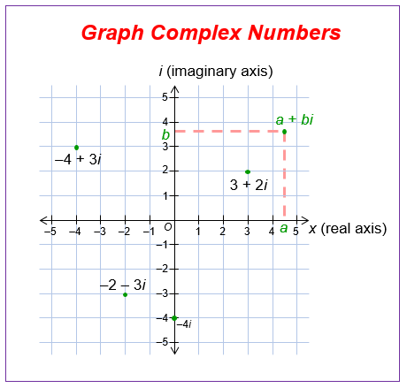

Graphing Complex Numbers
As for this lesson, this could be the easiest lesson of all the lessons of the Complex Numbers. It is all about having a Complex Number and Graphing it on a Grid with just putting one point, or Extracting the Complex Number from the Graph; and always KEEP in mind that the X-Axis stands for the Real Numbers while the Y-Axis stand for the Imaginary Numbers.
As we see in the Graph above, there are points graphed depending on the Real and Imaginary Numbers, as you see, lets take the point 3+2i, as you see the point is at 2 on the x-axis and 3 on the y-axis; if we want a point like -2+4i we need to locate the point that meets -2 on the x-axis and 4 on the y-axis at the same time. What if the point is on the line X-axis or the Y-axis directly? Then, check if it is on wich axis it is on first, then see, if it is on a point on the x-axis like 4 it will stay 4 since the X-axis is for the Real Numbers, but if it is on the 4 on the Y-axis, then it is 4i since it is on the Y-axis, which is for the Imaginary Numbers.